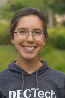

DISCOVER TECH
For 3rd - 6th Grade Girls
This program meets four times per semester on School of Mines campus. It introduces girls to a variety of STEM subjects through fun, hands-on activities. Registration for our Spring 2018 program is now open.

- Time: 4:30-5:45
- Day: Offered Monday - Thursday (choose ONE day of the week, as listed below)
- Location: Colorado School of Mines campus
- Cost: $60 (includes program t-shirt)
2018 Spring Session days/dates
- 3rd/4th Grade (choose ONE session):
- MONDAY session: January 29, February 12, March 5, April 9
- TUESDAY session: January 30, February 13, March 6, April 10
- WEDNESDAY session: January 31, February 14, March 7, April 11
- THURSDAY session: February 1, February 15, March 8, April 12
- 5th/6th Grade (choose ONE session):
- MONDAY session: February 5, February 26, March 12, April 16
- TUESDAY session: February 6, February 27, March 13, April 17
- WEDNESDAY session: February 7, February 28, March 14, April 18
- THURSDAY session: February 8, March 1, March 15, April 19
Our DISCOVER Tech Instructors
 Bethel is a junior majoring in Computer Science and minoring in Humanitarian Engineering. She loves her job because it makes her happy to see all of the DECtech girls gaining interest in STEM! Outside of work she likes to travel and spend time with friends and family.
Bethel is a junior majoring in Computer Science and minoring in Humanitarian Engineering. She loves her job because it makes her happy to see all of the DECtech girls gaining interest in STEM! Outside of work she likes to travel and spend time with friends and family.
 Leah is a Sophomore majoring in Applied Mathematics at Mines. Her math studies have shown her how beautiful and under-appreciated it can be. She has a lot of experience mentoring and working with girls, and is always looking for ways that she can do her part in decreasing the gender gap in the STEM fields.
Leah is a Sophomore majoring in Applied Mathematics at Mines. Her math studies have shown her how beautiful and under-appreciated it can be. She has a lot of experience mentoring and working with girls, and is always looking for ways that she can do her part in decreasing the gender gap in the STEM fields.
Lydia is a sophomore in Civil Engineering at Mines. Since elementary school she has had a love for math and science and knew she wanted to go to Mines after a field trip in the 5th grade. In her free time she enjoys cooking, painting, and doing yoga.
 Megan is a senior at Colorado School of Mines pursuing a degree in Computer Science. She is an avid singer, actress and member of the swing dance team, she is also passionate about the arts and humanities and enjoys bridging the gap between engineering and creativity. Megan's dream is to one day become a teacher and inspire others about the power and versatility of STEM, and she is happy to be part of a program that does just that.
Megan is a senior at Colorado School of Mines pursuing a degree in Computer Science. She is an avid singer, actress and member of the swing dance team, she is also passionate about the arts and humanities and enjoys bridging the gap between engineering and creativity. Megan's dream is to one day become a teacher and inspire others about the power and versatility of STEM, and she is happy to be part of a program that does just that.
 Sarah is a 5th year senior pursuing a degree in Engineering Physics with a minor in Computer Science. She hopes to take her education into the aerospace field hoping one day to work in astronautics and space exploration. On campus, she is involved in the orchestra and band programs. She sees the beauty in expression through music and arts and is fascinated by the connection of technological growth in music. She is very passionate about the versatility of STEM in all walks of life and loves that she is a part of a program that allows her to share love for STEM.
Sarah is a 5th year senior pursuing a degree in Engineering Physics with a minor in Computer Science. She hopes to take her education into the aerospace field hoping one day to work in astronautics and space exploration. On campus, she is involved in the orchestra and band programs. She sees the beauty in expression through music and arts and is fascinated by the connection of technological growth in music. She is very passionate about the versatility of STEM in all walks of life and loves that she is a part of a program that allows her to share love for STEM.
For a printable flyer (pdf) about the current session of DISCOVER TECH, please click here.
Have questions? Please visit our FAQ page and find answers to popular questions.
To register for this program, click the REGISTER link in the purple navigation bar above.
Need more information? Please email us at stem-tech@mines.edu
Financial scholarships available thanks to our sponsors